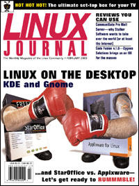

Shutdown Archive web server
Search:
Linux Journal
Issue #70/February 2000

Focus
Linux on the Desktop
by Marjorie Richardson
Features
KDE—The Next Generation
by Kalle Dalheimer
Ready to jazz up your KDE desktop—get KDE 2.0.
GNOME, Its State and Future
by George Lebl, Elliot Lee and Miguel de Icaza
The GNOME team bring us up-to-date on the progress of this popular desktop environment.
Artists' Guide to the Linux Desktop, Part 1
by Michael J. Hammel
The first in a series by our favorite artist to take a look at the most commonly used window managers.
Office Wars: Applixware and StarOffice
by Jason Kroll
Office suites are the mainstay application for any OS; Linux has two competing for your business.
Forum
LaTeX for Secretaries
by Jacek Artymiak
How to survive without Microsoft Word.
Matlab—A Tool for Doing Numerics
by Tobias Vancura
An introduction to a command-line program for matrix manipulation.
Remind: The Ultimate Personal Calendar
by David F. Skoll
If you have trouble remembering where you are going, this clever program can help you find your way.
LinuxPPC 1999
by Stephane Morvan
How to install Linux on your Power Macintosh to gain a robust alternative to the MacOS.
Open Source/Open Science 1999
by Stephen Adler
Mr. Adler tells us about a first-of-its-kind conference.
Profile: TiVo
by Craig Knudsen
The ultimate in recording television programs, TiVo is a set-top box that does everything for you.
Reviews
CommuniGate Pro Mail Server
by Scott Wegener
Code Fusion Version 1.0
by Daniel Lazenby
Teach Yourself StarOffice 5 for Linux in 24 Hours
by Ben Crowder
The No B.S. Guide to Red Hat Linux 6
by Harvey Friedman
LINUX to go
by Marjorie Richardson
StarOffice for Dummies
by Sid Wentworth
Columns
Linux Apprentice: SCSI—Small Computer System Interface
Successfully installing a SCSI device on a PC.
by Keith de Solla
Take Command
HFS utilities
by Marjorie Richardson
Data on Macintosh disks can be read into Linux quite easily with this tool package.
Linux Means Business
Using Linux at the Aging Research Centre
by Jason Neudorf and Steven A. Garan
Come up to the lab and see what's on the slab—I mean, slide.
System Administration
Mark's Mega Multi-Boot Computer
by Mark Nielsen
Mark talks about his crazy multi-boot computer, which does have some practical value.
Kernel Korner
: Linux 2.4 Spotlight: ISA Plug and Play
by Joseph Pranevich
If you are tired of the complexity of configuring PnP devices for Linux, you can look forward to some relief from the 2.4 kernel release.
Linux Gazette: Emacs Macros and the Power-Macros Package
Writing Emacs macros doesn't have to be hard—Mr. Pedersen helps you get “more power”.
by Jesper Pedersen
Cooking with Linux
Tasty KDE Desktop Themes
by Marcel Gagné
At the Forge
More About Searching
by Reuven M. Lerner
Focus on Software
by David A. Bandel
The Last Word
by Stan Kelly-Bootle
Departments
Letters
More Letters
upFRONT
Penguin's Progress: Desktops of the Future
by Peter Salus
Linux for Suits
by Doc Searls
Best of Technical Support
New Products
Strictly On-Line
T/TCP: TCP for Transactions
by Mark Stacey, Ivan Griffin and John Nelson
A discussion of the operation, advantages and flaws of an experimental extension for the TCP protocol.
POSIX Thread Libraries
by Felix Garcia and Javier Fernandez
The authors have studied five libraries which can be used for multi-thread applications and herein present the results.
Linux and Open-Source Applications
by Peter Jones and M. B. Jorgenson
The building blocks for a secure and trustworthy computer platform.
Laptops for Linux!
by Jason Kroll
Archive Index
Shutdown Archive web server
Search:
Copyright © 1994 - 2018
Linux Journal
. All rights reserved.